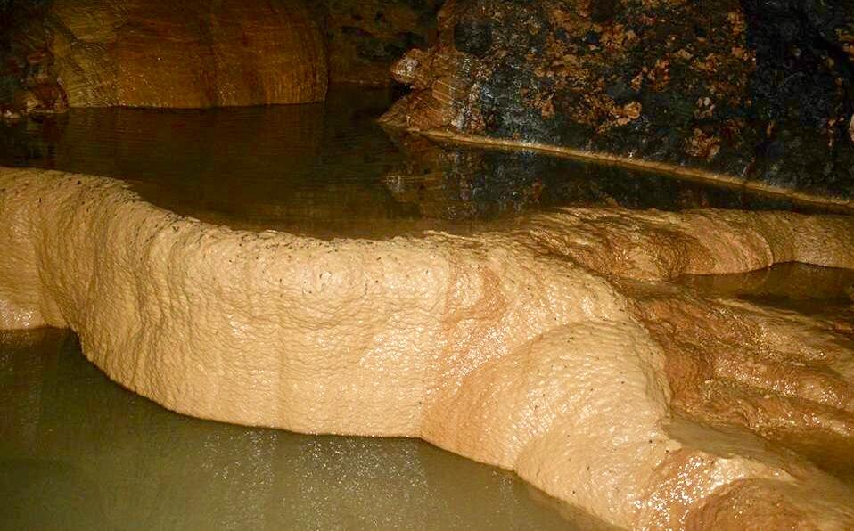
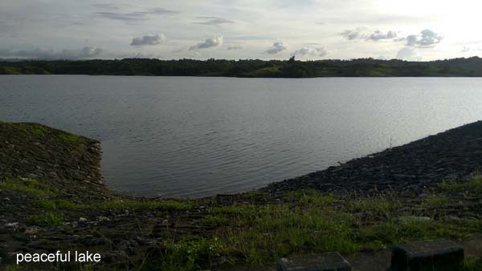
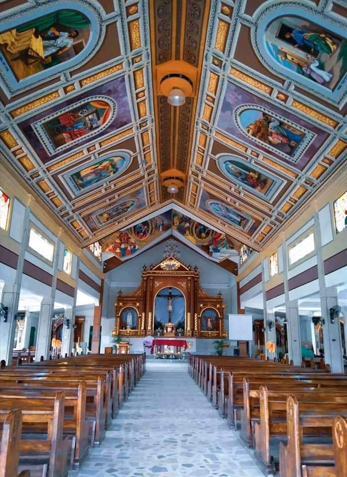
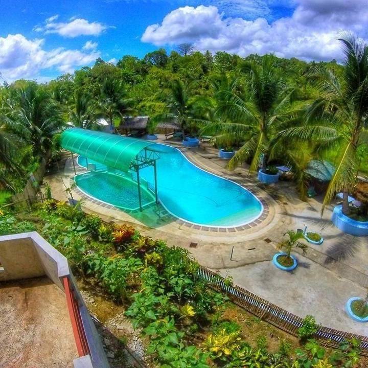

Home
Municipality of San Miguel
Videos
Contact us
Baranggays and Population
History
Information
Tourist Spots
Tourist Spots

Langgam Cave in San Miguel, Bohol

Bayongan Dam in San Miguel, Bohol
Masanao Hill Top in San Miguel, Bohol

St. Michael the Archangel Parish in San Miguel, Bohol

Doc. Abellar's Swimming Pool Resort in Garcia,San Miguel, Bohol